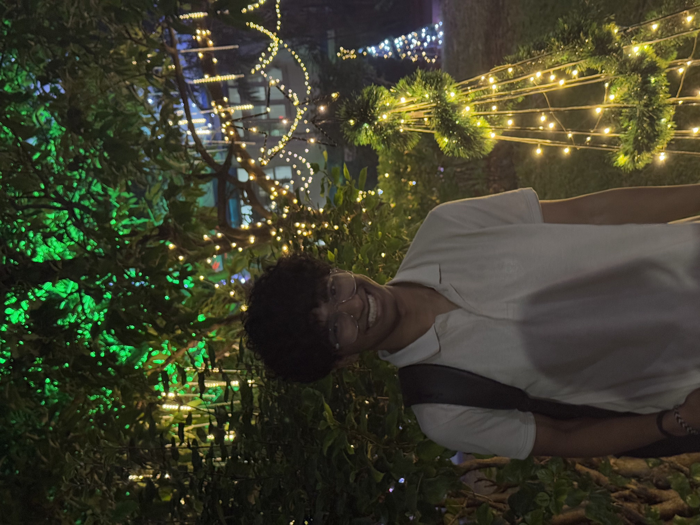

Yugank Manesh Mahale

Summary
I am currently pursuing BE in Mechanical Engineering at FRCRCE, Mumbai.
I am very focused on solving problems with maximum accuracy with the available resources.
I have experience in technical projects as well as management based tasks.
I am still learning my way through various hurdles and situations to be the best version of myself.
I am an experienced filmmaker and video editor , working since the past 6 years.
Education
- Bachelor of Engineering - Fr. Conceicao Rodrigues College of Engineering (2023-2027)
- HSC - Allen Institute - Integrated Batch (2021-2023)
- SSC - NEHS (2007-2021)
Work Experience
-
Film Society CRCE w/w students council crce , dramatics society crce , Nirvana CRCE(Team)
Fr. Conceicao Rodrigues College of Engineering · Full-time
Apr 2024 - Present · 11 mos
Mumbai, Maharashtra, India · On-site
- Web Development
- Event Management
- Marketing
- Public Relations
- Video Production
- Video Editing
-
School Representative and Head
NEHS WAG international program
june 2016 - june 2019 · 3 years
Virar(East), Maharashtra, India · On-site
- Team Leadership
- Event Management
- Public Relations
- Speaking Skills
Skills
- Leadership: ⭐⭐⭐⭐⭐
- Team Management: ⭐⭐⭐⭐⭐
- Adaptability: ⭐⭐⭐⭐
- Public Relations: ⭐⭐⭐⭐
- Web Development: ⭐⭐⭐
- Video Editing: ⭐⭐⭐⭐⭐⭐
Awards & Certifications
-
Mood Indigo Quickcut 1st prize
-
2X time MUN winner
-
CINE CRCE 1st prize
-
NEHS Science centre Best Innovator
Project Links